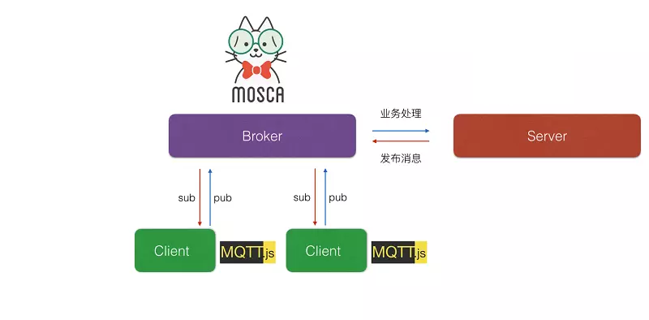

前言：
实现MQTT服务器及客户端的方法有很多种，今天我们学习一下怎么使用nodejs实现mqtt协议，这里我们主要使用两个工具mosca和mqtt.js
首先需要了解一下mosca和mqtt.js的关系，下面这张图能清晰的解释如何通过mqtt协议进行交互通信

1.下载nodejs
下载地址：http://nodejs.cn/download/
根据需要下载合适的自己平台的软件
这里我下载的是windows的64位msi，下载好直接安装就行了，直接下一步直到完成。
2.安装mqtt.js模块
这一步非常简单，在你心仪的那个文件夹下打开cmd窗口然后输入1
npm install mqtt --save命令即可。
安装好会出现如下图红圈内的文件夹及文件
创建一个客户端进行测试
在刚刚安装mqtt.js文件夹下创建一个mqtt-test.js文件，然后键入以下代码
1 | var mqtt = require('mqtt') |
然后在此文件夹下打开cmd输入node mqtt-test.js就会出现如下图所示结果
测试结果.png
这样就说明你的mqtt模块就建立好了，但这仅限于客户端的使用为了使我们更方便的使用我们将在本地搭建一个服务器
3.安装mosca
下面来说说如何建立服务端
安装mosca（和上面安装mqtt.js一样）
打开cmd然后输入1
npm install mosca --save
创建mqtt-server.js文件
代码如下1
2
3
4
5
6
7
8
9
10
11
12
13
14
15
16
17
18
19
20
21
22
23
24
25
26
27
28
29
30
31
32
33
34
35
36var mosca = require('mosca');
var ascoltatore = {
//using ascoltatore
//type: 'mongo',
//url: 'mongodb://localhost:27017/mqtt',
//pubsubCollection: 'ascoltatori',
//mongo: {}
};
var settings = {
port: 1883,
http: {
port: 3000,
bundle: true,
static: './'
}
};
var server = new mosca.Server(settings);
server.on('clientConnected', function(client) {
console.log('client connected', client.id);
});
// fired when a message is received
server.on('published', function(packet, client) {
console.log('Published', packet.payload);
});
server.on('ready', setup);
// fired when the mqtt server is ready
function setup() {
console.log('Mosca server is up and running');
}
然后在此文件夹下打开cmd 输入node mqtt-server.js
若显示下图所示，则说明本地mqtt服务端搭建完成
服务端的搭建.png
链接自己的mqtt服务端
将mqtt-test.js中的mqtt://test.mosquitto.org改为mqtt://127.0.0.1即可
然后打开两个终端
一个是运行服务端的
另一个运行客户端
首先运行服务端，然后在运行客户端，若出现下图所示
客户端.png
服务端.png
mosca html客户端代码
1、生成browserMqtt.js ，拷贝出来，放到和index.html目录下面1
2
3cd node_modules/mqtt
npm install .
webpack mqtt.js ./browserMqtt.js --output-library mqtt
2、创建index.html
- 注意：html客户端的地址是ws://localhost:3000，这个ws开头表示是websocket的地址，端口号是3000，不是
1 | <html> |
附：参考链接
mqtt.js
mosca